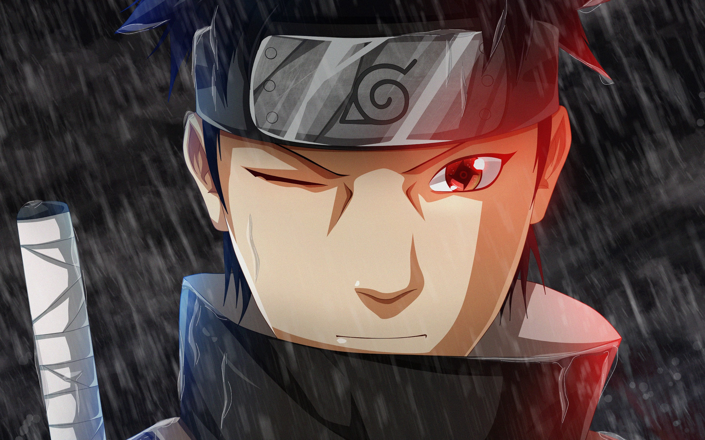
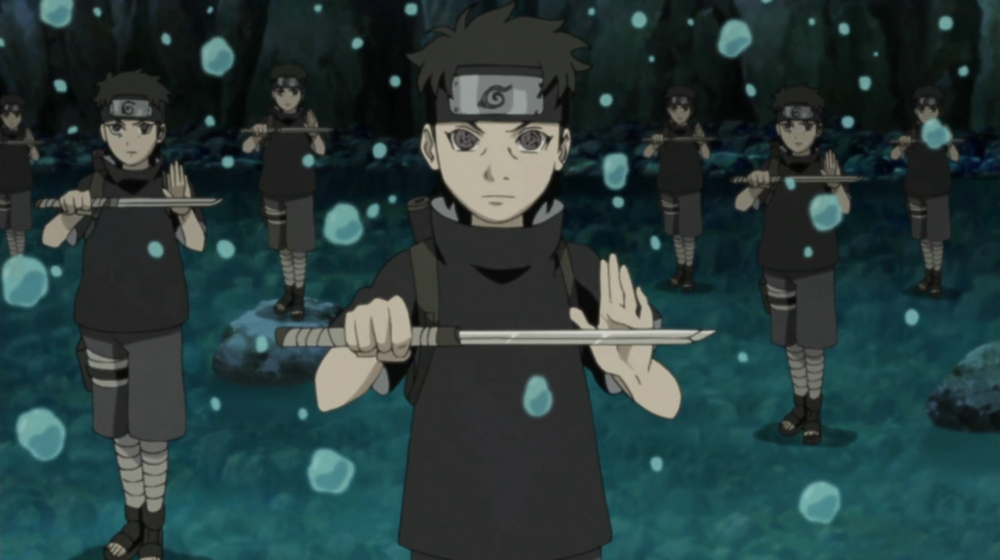
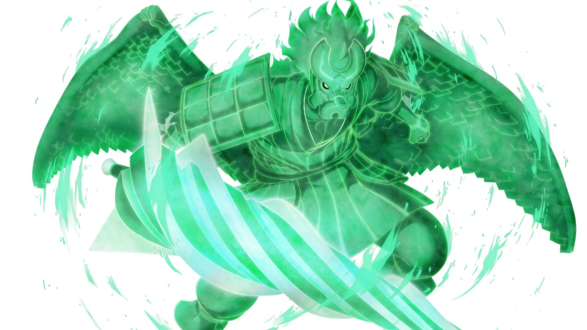

Shisui Uchiha was a highly skilled and respected shinobi from the Hidden Leaf Village's Uchiha clan, famously known as "Shisui of the Body Flicker" for his incredible speed and mastery of movement techniques. As a member of the Anbu, he was admired for his intelligence, calm nature, and strong sense of loyalty to the village. Possessing the Mangekyō Sharingan, Shisui wielded the powerful genjutsu Kotoamatsukami (別天津神, lit. "Distinguished Heavenly Gods"), which allowed him to subtly influence others without their knowledge. Despite his immense strength, he valued peace above all else and sought to prevent conflict between the Uchiha clan and the village. In the end, Shisui sacrificed himself to protect Konoha and entrusted his remaining eye to his closest friend, Itachi Uchiha, leaving behind a legacy of courage, loyalty, and selflessness.

